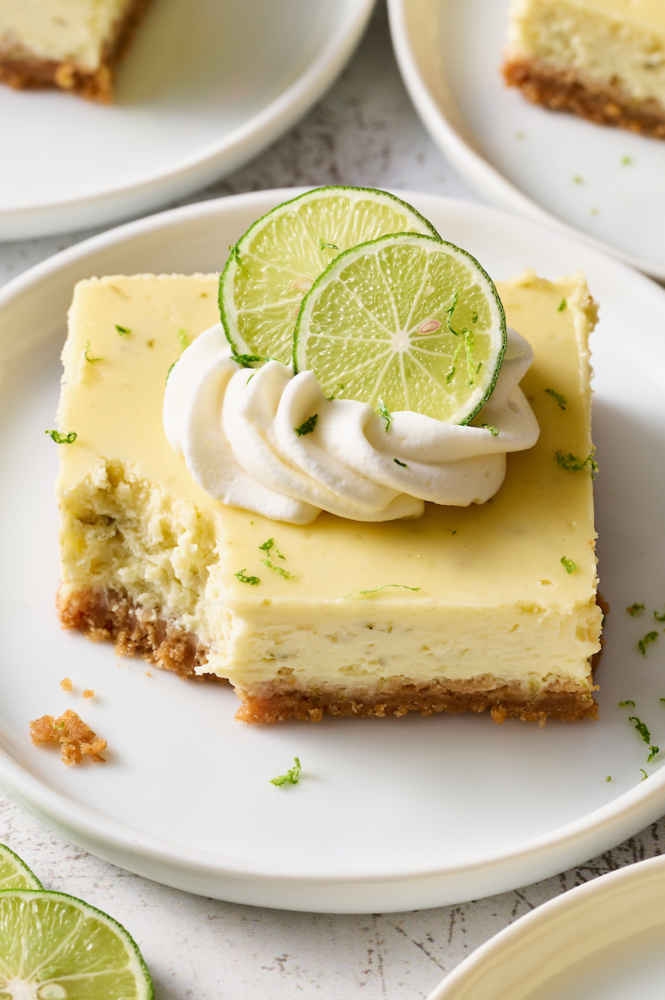

Key Lime Bars

A key lime bar balances a tart and creamy topping with a buttery rich base. For the base, we wanted something
similar to shortbread: a crisp, buttery crust that could support the topping and yet slice neatly and easily.
Ingredients
- 6 ounces ATK All-Purpose Glute-Free Flour Blend (pg 7)
- 2 1/3 ouces sugar
- 1/4 teaspoon salt
- 1/4 teaspoon xanthan gum
- 8 tablespoons unsalted butter, cut into 1/2-inch pieces and softened
- 1-2 tablespoons water
- 2 ounces cream cheese, softened
- 1 tablespoon grated lime zest plus 1/2 cup juice (4 limes)
- Pinch salt
- 1 can sweetened condensed milk
- 1 large egg yolk
- 3/4 cup sweetened shredded coconut, toasted (optional)
Steps
-
Adjust oven rack to middle position and
heat oven to 350 degrees. Make foil sling
for 8-inch square bakig pan by folding 2
long sheets of aluminum foil so each is 8
inches wide. Lay sheets of foil in pan
perpendicular to each other, with extra
foil hanging over edges. Push foil into
corners and up sides of pa, smoothing foil
flush to pan; spray with vegetable oil.
-
FOR THE CRUST: Using stand mixer fitted with
paddle, mix flour blend, sugar, salt, and
xanthan gum to low speed until combined. Add
butter, 1 piece at a time, conntiue to mix
until dough forms and pulls away from sides
of bowl, 2 to 3 miutes. (Add 1 to 2 tablespoons
of water as eneded if dough appears dry.)
-
Transfer mixture to prepared pan and press
firmly into eve layer using bottom of measuring
cup. Bake crust until fragrant and beginning to
brown, 25 to 30 minutes, rotating pan halfway
through baking. Let crust cool for about 30
minutes.
-
FOR THE FILLING: Stir cream cheese, lime zest,
and salt together in bowl until well combined
and no lumps remain. Whisk in condesed milk
until well combined. Whisk in lime juice and
egg yolk until very smooth. Pour filling evenly
over cooled crust. Bake until bars are set and
edges begin to pull away slightly from sides of
pan, 15 to 20 miutes, rotatig pan halfway
through baking.
-
Let bars cool completely in pan, about 2 hours.
Cover with foil and refrigerate bars until
thoroughly chilled, about 2 hours. Using foil
sling, remove bars from pan. Sprinkle with
toasted coconut, if using. Cut ito squares and
serve. (Bars can be refrigerated for up to 2
days; crust will soften.)